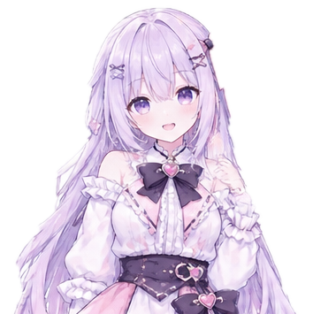
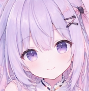

Nade♡OS 0.3 — SOFT MOTION
♡
Nade♡Me
♥
好感度
⚙
設定
♡ Nade♡Me — ふれあいウィンドウ
⚙
×
DAY 01 / のこり 5 回
CHARACTER 01 / 試作


😊
表情：通常
✋
✎
★
ゆる
筆談 / 選択肢
……来てくれたんだね。
送る ➤
3人合計で多数の会話イベント。話題はランダムに切り替わり、全話を終えるまで重複しません。
♡ 好感度モニター
×
♥
ゆる
+0
左：嫌悪 −100 ｜ 右：好意 ＋100
⚙ 設定
×
SOUND & SYSTEM
BGM 音量
35%
SE 音量
55%
立ち絵のゆらぎ
70%
♫ BGMを再生
遊び方
※ 立ち絵は2D画像のゆらぎ表現です。強さを0%にすると停止します。OSの「動きを減らす」にも対応しています。
♡ START
▣ Nade♡Me
♥ 好感度
⚙ 設定
DAY 01
♡ OS 0.3
▣ Nade♡Me を開く
♥ 好感度モニター
⚙ 設定
☾ 今日は帰る
↺ セーブを初期化
ミニゲーム